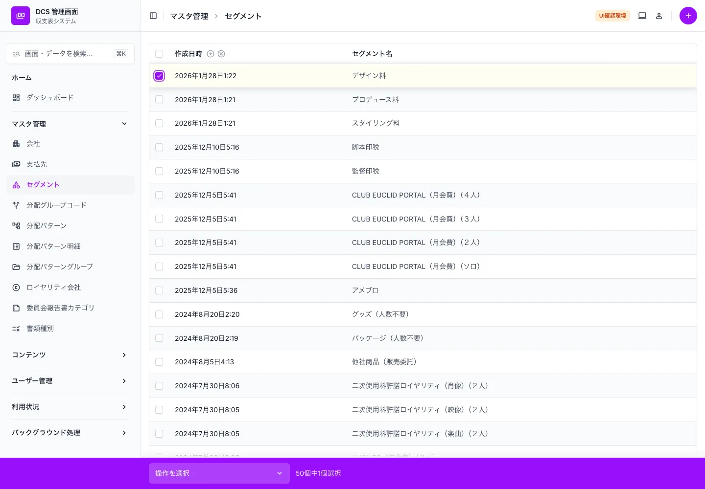
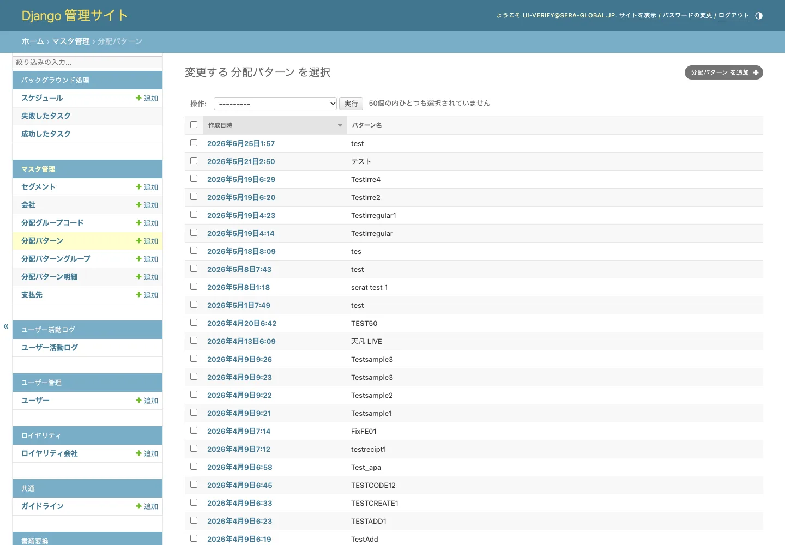

DCS admin re-skin · functional verification
Staging (current, stock Django admin) and ui-improvement (new UI, django-unfold) were compared on identical data — screen by screen, list by list, form by form, filter by filter, including a real save and the GraphQL API. Three differences turned up; every one is either an intended change or an artefact of the review environment. Nothing was lost.
Both run on the same server and the same PostgreSQL cluster, and the new UI's database is a clone of the staging one. So the same rows should come back in the same order — and where they don't, that difference is the implementation, not the data. That is what makes this comparison meaningful.
Every number below was measured by sending the same request to both environments.
None of these is something that broke. Here is what each one is and why it is there.
The same 36 users appear in both environments — only the order differs. People sign in with their email address, while the username column holds generated values such as Dy-hayashiKy-hayashiHy-hayashi4y-hayashiV, which made the list hard to scan. The new UI sorts by email on purpose (app/user/admin.py).
Staging runs a live worker that keeps writing new task records, while the cloned database stopped at the moment it was copied. This is data freshness, not an implementation difference. The other 16 models matched exactly.
Those commits include a security fix that closed unauthenticated endpoints, and they removed the GraphQL root field projectDistributionRecipientMappingList on dev. The UI branch still carries it. This is not caused by the UI work — rebasing onto dev, which is the first step of phase 5, resolves it. The six new migrations do not collide with anything on dev.
Pick a screen below, then drag the handle — or use the slider under the image — to wipe between the two. Left is the current admin, right is the new UI: same screen, same data. Email addresses and personal names were masked before publishing; the dots you see are not real values.
These have no counterpart on the current admin, so they are shown on their own.

Flipped on the actual server and photographed. Only the theme comes off: the Japanese model names remain and the activity-log CSV export still works. If anything goes wrong in production, this one setting plus a restart puts the old admin back.

The comparison above was taken on 2026-10-16, at phase 4. Six slices have merged into ui-improvement since, all of them answering this ticket's own background — screens that make activity easy to analyse. Every one is on the review server. None of them changes a model, a migration or the GraphQL schema, so none of them changes what was verified above.
The same request was sent to both environments and the responses compared.
| Screen / action | Path | Current | New UI | Result |
|---|
To be done once the design is approved. This verification was about confirming the preconditions are in place.
No frontend work is required. The GraphQL schema is unchanged and the SPA never touches /admin/.